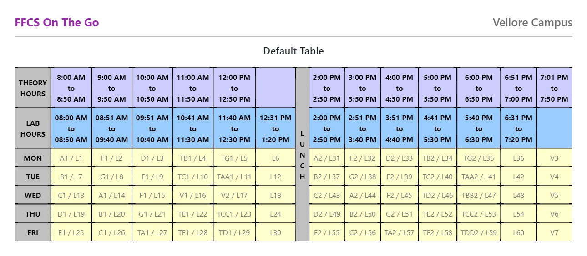

Okay,so this is the overalll site wherein you will be able to work upon everything related to academics .
THE EPT SCHEDULES IS VISIBLE UNDER EXAM MENU OPTION IN VTOP.
YOUR VTOP ID AND PASSWORD ARE INITIALLY SET BY VIT BUT THEN YOU CAN SET IT TO AN USERNAME OF YOUR CHOICE.
So FFCS is basically a a system of registering for courses you wish to study for a particular semester.The important point to note is that there is something called as a slot and you cant have a two classes in one slot also called as "slot clashing"
The minimum number of credits that can be registered is 16 and maximum is 27 .But the actual number depends upon the number of courses offered by your respective school
YOU WILL HAVE FFCS FOR THE NEXT SEMESTER i.e (WINTER SEMESTER)
You can choose between different faculties,different slots and different venues as well.
The slots are as follows (A,B,C,D,E,F,G)and respective T slots.
Either you choose all theory classes in morning slots(A1,B1,C1 etc) and lab slots in afternoon(L30-L60) or vice versa
YOU WILL BE PROVIDED WITH A MOCK FFCS BEFORE YOUR ACTUAL FFCS
Library:- You'll have access to library as soon as your classes commence. There are few rules for library you should know. You will not be permitted entry without I'd card and you have to scan your biometric before entering and after leaving library. You are not allowed to carry your bag in library, you can submit your bag to the side of library in a deposit (separate for girls and boys). You can find what book you want and their location using VIT's library website http://webopaccc.vit.ac.in/ . When issuing a book, you'll have a week of time to return it or else you'll fined with 1rs per day, which can be paid through VTOP.
To deposit issued book, you need to go around the library from outside and you'll find few windows where you just pass the book into the belt. Make sure to check for the sms of book returned.
CLASSES:
Different academic blocks are dedicated to different schools. Your school decides where you classes are going to be held.
SCOPE- PRP; V-SPARC - MGB; SMEC - MB ; SELECT - TT; SCHEME - SMV; HOT - SMV; SCORE - SJT; V-sign - MGB; SENSE - TT ; VAIAL - PRP;
Exams:- For B.Tech students, there are 3 exams in a semester. These are CAT1, CAT2 and FAT. CAT1:- CAT-1 is your standard exam which takes place after over a month of starting of classes. Your exam schedule depends upon your slot and subjects.
CAT2:- cat2 consists of syllabus after cat1, cat2 is different compared to cat1 as cat2 is an OPEN BOOK exam where you are allowed to carry your handwritten notes as well as book. CAT1 and CAT2 are 50max mark exams with 5 questions of each 10 marks.
FAT:- Its the final exam of your semester. There are 12 question where you can answer any 10 each of 10 marks which in total is 100max marks.
FAT contributed 40% in final grading, CAT1 and CAT2 contributed 15% each and quizzes and digital assignments taken by your faculty contributed the rest 30%.